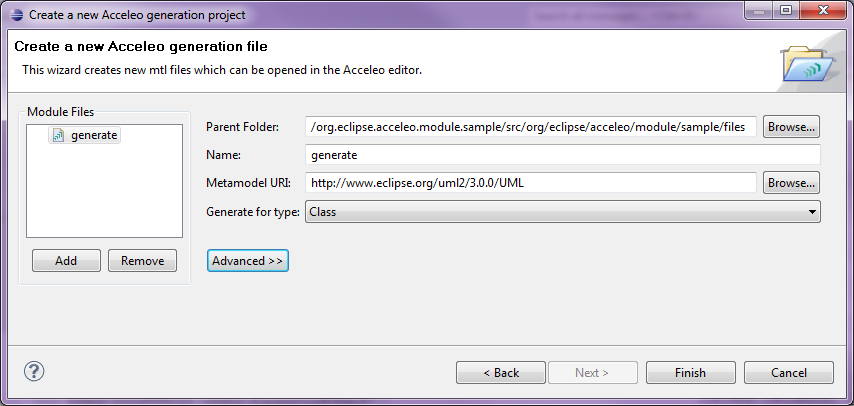
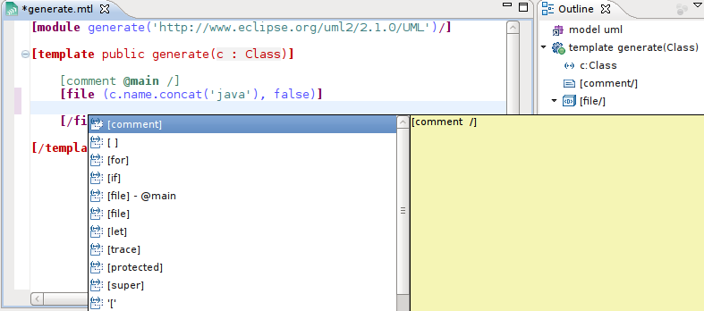
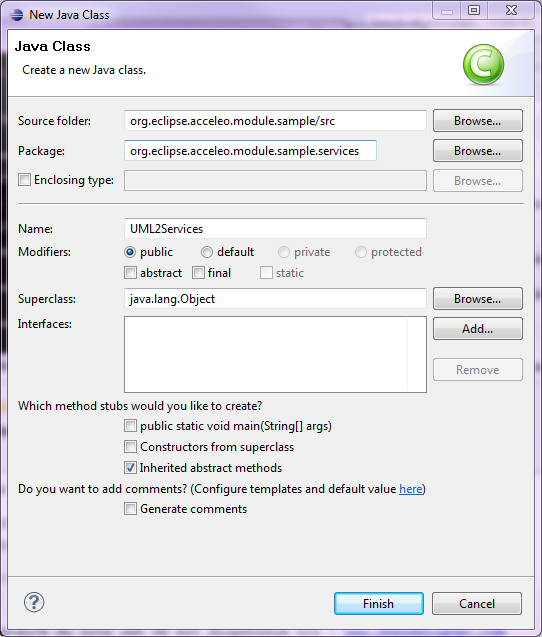
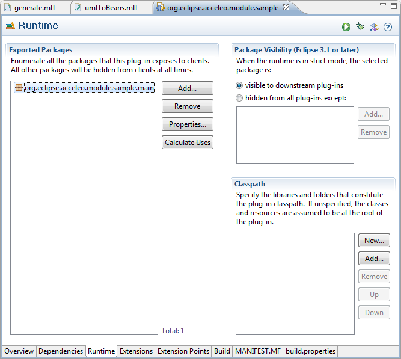
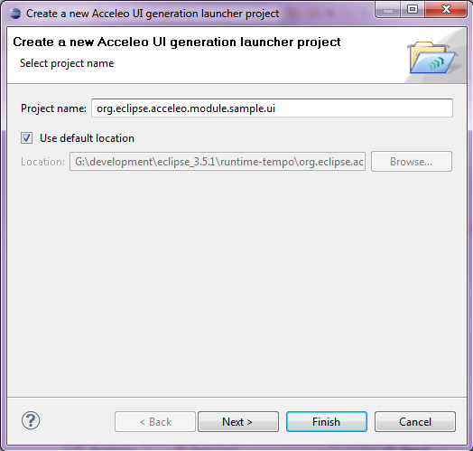

| Authors | Laurent Goubet |
| Laurent Delaigue | |
| Contact | laurent.goubet@obeo.fr |
| laurent.delaigue@obeo.fr |
Copyright 2008, 2011 Obeo.
The aim of this tutorial is to get you started with Acceleo by helping you create your first generation module. For the purpose of this tutorial, we will focus on creating an Acceleo module that generates Java beans from a UML model.

Using the Acceleo perspective will make things easier when working with Acceleo as it provides dedicated views and actions. Furthermore, being on that perspective will promote some menu items so that they are directly accessible instead of being nested within others.
You can switch to the Acceleo perspective by selecting the Window > Open Perspective > Other... menu and selecting Acceleo in the popup that appears then.

Acceleo Projects are meant to provide you with facilities to write your Acceleo modules. In order to create a new Acceleo project, use the menu item File > New > Acceleo Project.

Choose the name you want for your project (here, we'll go for the default org.eclipse.acceleo.module.sample), then click Next>.

This second wizard page allows you to initialize the project by creating one or several Acceleo module files.
Note: other options are available to initialize the new module with existing content. These will be discussed in detail later.

You can create more than one module file in this project by using the "Add" button on the left, we only need one in this example.
Clicking on finish will create the module file(s), and some files automatically generated from it (more on these below).

The Acceleo module editor provides the following features:

For more information about the Acceleo syntax, please read the official OMG specification accessible from the official MTL Specification.
We would now like to create a bean for each of the classes defined in our sample model. Here is the code for the module file:
[comment encoding = UTF-8 /]
[module generate('http://www.eclipse.org/uml2/3.0.0/UML')/]
[template public generate(aClass : Class)]
[file (aClass.name.concat('.java'), false)]
public class [aClass.name.toUpperFirst()/] {
[for (p: Property | aClass.attribute) separator('\n')]
private [p.type.name/] [p.name/];
[/for]
[for (p: Property | aClass.attribute) separator('\n')]
public [p.type.name/] get[p.name.toUpperFirst()/]() {
return this.[p.name/];
}
[/for]
[for (o: Operation | aClass.ownedOperation) separator('\n')]
public [o.type.name/] [o.name/]() {
// TODO should be implemented
}
[/for]
}
[/file]
[/template]
As shown below, the content assistant provides choices from the UML metamodel:

You can now launch the generation of your Java beans using this generation module. In order to do this, you will have to :
Right-click on the Acceleo module file (that is, the generate.mtl file) and select Run As > Launch Acceleo Application.

The Acceleo launch configuration page opens, and you need to provide it with the sample model and target folder.

The resulting java file generated by this module file will look like this:

Acceleo supports two ways of specifying user code blocks in the generated code. User code blocks delimit portions of text that are only generated once, and preserved for subsequent generations. This is very useful in order to allow users to add code in some areas of the generated files while keeping the rest of the file under the control of the generator.
The first way of specifying user-code blocks is to use the standard (id).../protected construct, as shown below (we've also added some queries in there to handle the package structure):

The above module produces the following code:

The second way, which is specific to generators that target the java language, is to add @generated annotations on the javadoc of elements that must be generated. Other elements (those that do not have such annotations in their javadoc, or in which the annotation has been slightly modified (i.e: @generated NOT or @not-generated ... or whatever you fancy)) are considered not to be modified by subsequent generations.
If a file contains at least one annotation @generated, the merge of the former java file and the newly generated one is delegated to JMerge_. @generated annotations must be added in the javadoc of the relevant java elements. They are not JDK5 annotations.

In both of these examples, the code located in "protected" areas will never be overriden by subsequent generations, be it left as-is or modified by the user outside of the module (directly in the generated file).
We will now add a requirement that java beans should only be generated for Classes that have the Bean stereotype. This coud be done through Acceleo alone, but for the purpose of this tutorial we will use a java service (extension of the language) in order to check whether the stereotype is present on any given Class.
It is possible to initialize the content of a new Acceleo module file with content that comes from :
We will detail here the second possibility, which makes it possible to execute standard java code from any Acceleo template or query.
First, create the Java class we'll use as a service in Acceleo.


package org.eclipse.acceleo.module.sample.services;
import java.util.List;
import org.eclipse.uml2.uml.Class; import org.eclipse.uml2.uml.Stereotype;
public class UML2Services {
public boolean hasStereotype(Class clazz, String stereotypeName) {
List<Stereotype> stereotypes = clazz.getAppliedStereotypes();
for (Stereotype stereotype : stereotypes) {
if (stereotype.getName().equals(stereotypeName)) {
return true;
}
}
return false;
}
}
Now, what's left is to call this method from Acceleo. The easiest way to do so is to use the provided wizard. Right-click the org.eclipse.acceleo.module.sample.services package and select New > Acceleo Module File.

In the wizard window, enter the relevant information in the fields : select the UML metamodel URI and change the name field to uml2Services. Then, activate the Advanced button in order to gain access to the advanced options.
Tick the Initialize Contents checkbox and select: Create a Java services wrapper. Finally, browse to find the UML2Services java file.

This creates a new Acceleo Module file that contains a query (one per java method in your java class) whose role is just to delegate its behavior to the java class, thus making it accessible to your templates.
This is simply achieved thanks to the non-standard ``invoke`` Acceleo operation.

Now to prevent Acceleo from generating files for classes that do not have the Bean stereotype, all that's needed is to import the uml2Services module in the generate module and nest the file block within an if block calling this service.

We recommend not to have multiple modules with an @main annotation, as it complicates the workflow (you have to launch multiple generations to create all needed files). On the contrary, we recommend creating a "main" module which role will be to delegate to all of the modules that will create files. Typically, this module will be placed alone in its own *.main package.
Let's create this launcher for the beans generation. First, right-click the org.eclipse.acceleo.module.sample package in the Package Explorer and select New > Acceleo Module File.
We will need to change all default information. First, append '*/main*' at the end of the parent folder field. Then, give a meaningful name for this module (umlToBeans in this example) and set its metamodel appropriately. As we generate on UML, we will also change the root type of our generation to *Package* (the root of our UML model). We will also untick This will generate a file and tick Create a main annotation in the advanced options.

Since this module contains a @main annotation, we will need to export its containing package (so that other Eclipse plugins may launch the generation). For this, open the META-INF/MANIFEST.MF file of your project, go to its Runtime tab, click Add and select the org.eclipse.acceleo.module.sample.main package. The tab should look like this when you are done :

Now, paste the following code in your umlToBeans module :
[comment encoding = UTF-8 /]
[module umlToBeans('http://www.eclipse.org/uml2/3.0.0/UML')/]
[import org::eclipse::acceleo::module::sample::files::generate /]
[template public umlToBeans(aPackage : Package)] [comment @main /] [for (aClass : Class | aPackage.packagedElement->filter(Class))] [aClass.generate()/] [/for] [/template]
And that's it! you can now launch this main module in order to generate java beans from any UML model. Simply right click the umlToBeans.mtl file, select Run As > Launch Acceleo Application and select the model from which to generate and the target folder before hitting the *Run* button.
Now that your generation modules are ready, you may want to have some wizards to launch the generation from within Eclipse. You can use the generated java launcher in a manually coded action, but you can also use the New Acceleo UI project wizard. This wizard will create a new Eclipse project which will allow you to launch the generation with a right-click action on any appropriate model.
First, right click on your Acceleo project (org.eclipse.acceleo.module.sample) then select *New > Acceleo UI Launcher Project*.

Fill in the desired name for this project, then click next.

Select the generator project as referenced project, then click next.

Finally, enter the model filename filter (files for which the generation action must be proposed on ricght-clicks, *.uml in our example), and the java code for the target folder (leave it as-is to generate the code in the src-gen folder of the project containing the right-clicked model).

The wizard will create a new plugin with all the necessary code to display a new action for the selected model file that will generate code in the specified folder. The screenshot below shows the result of this plugin, a Generate Uml To Beans action on the *.uml* files.